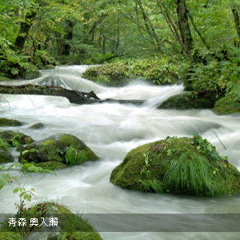
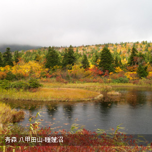

東北地區包括了青森、岩手、宮城、秋田、山形、福島等城市， 擁有許多日本國家級的珍貴古蹟。由於開發比起其他地區較緩，因此保留了許多未受破壞的自然美景，更有撼動人心的民俗祭典。以青森縣為例，面臨日本海與太平洋，充滿港都風情。境內有十和田湖、奧入瀨溪流、八甲田山等引人入勝的美景。此外，青森縣也是「富士」蘋果的發源地，品質優良的青森蘋果長年深受臺灣消費者的喜愛。

本網站刊登之所有文字．圖片資訊均受版權法保護 嚴禁擅自複製．轉載 Copyright © 2016 vito-app Co.,Ltd. All rights reserved